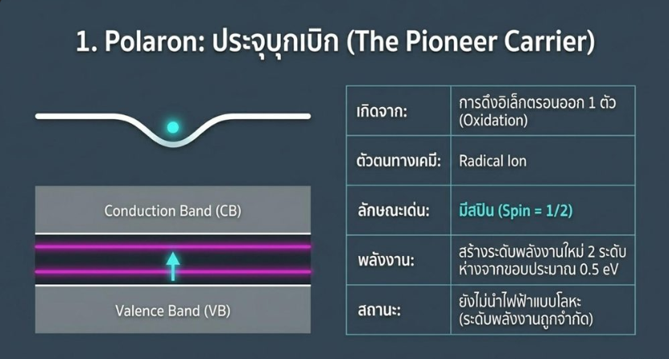

ศึกษาทฤษฎีกลไกการนำไฟฟ้าของพลาสติก และรวบรวมองค์ความรู้เพื่อจัดทำสไลด์นำเสนอเชิงวิชาการ
Core Objective
ศึกษาการเปลี่ยนพลาสติกที่เป็นฉนวนให้กลายเป็นตัวนำไฟฟ้าระดับโลหะผ่านการ Doping พร้อมจัดทำสื่อนำเสนอ
Methodology
Literature Review / Material Science Theory / Presentation Design
Key Outcome
สไลด์สรุปกลไก Polaron, Bipolaron และ Soliton
ศึกษาทฤษฎีพื้นฐาน (Band Theory) ทำความเข้าใจว่าโพลิเมอร์ปกติมี Bandgap > 1.5 eV ทำให้เป็นฉนวน แต่เมื่อเกิดกระบวนการ Doping (Redox Reaction) จะเริ่มนำไฟฟ้าได้
วิเคราะห์การเกิด Polaron (ประจุตัวแรก), Bipolaron (ประจุคู่), และ Soliton ใน trans-PA
สรุปวิวัฒนาการตั้งแต่ Doping ระดับต่ำไปจนถึงระดับสูงที่เกิด Metallic conduction ออกมาเป็นสไลด์ที่เข้าใจง่าย

Figure 1.0: เอกสารนำเสนอสรุปองค์ความรู้เรื่องพลาสติกนำไฟฟ้า